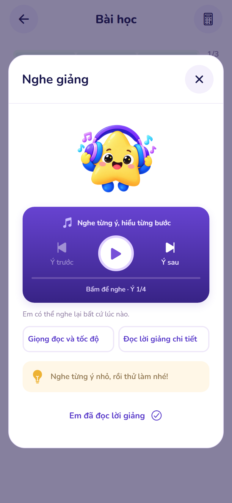
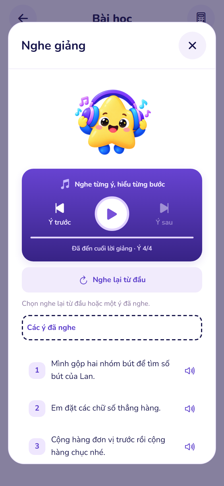
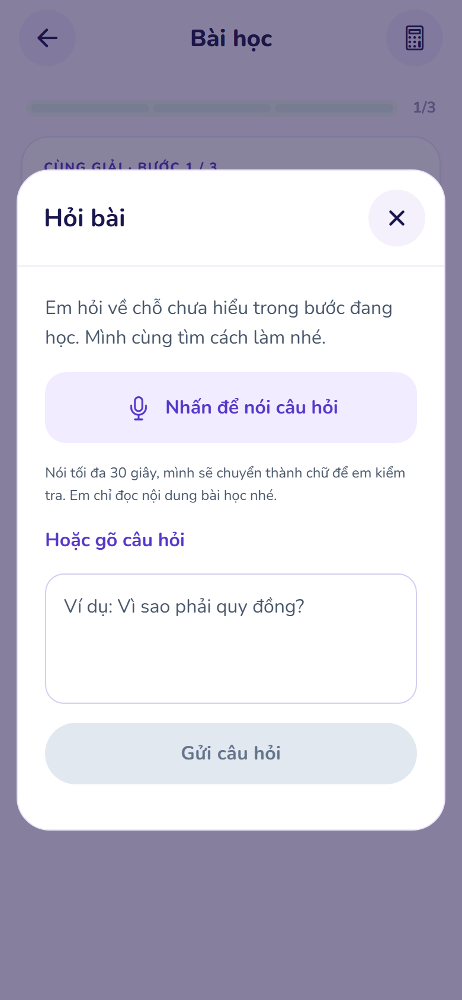
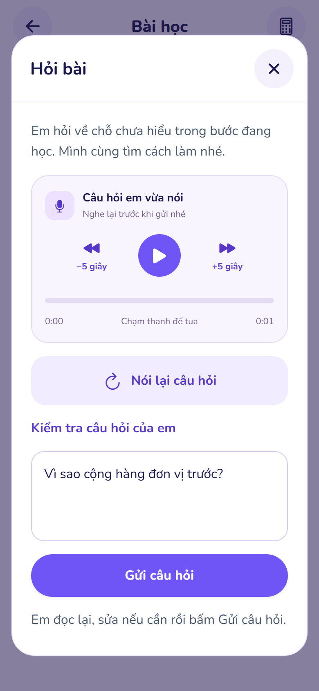
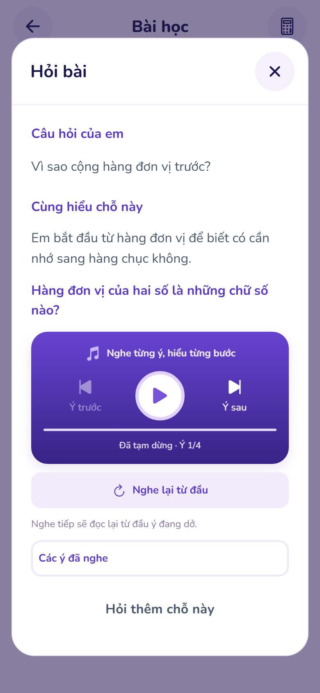

MATHVISIONKID · 22/10/2026Hỏi tự nhiên, nghe lại dễ hơn
Bấm mic để nói ngay. Câu hỏi vừa ghi có phát lại, tạm dừng, thanh tua và lùi/tiến 5 giây. Lời giảng có ý trước/sau, nghe tiếp, nghe từ đầu và các ý đã nghe.
Ảnh chụp giao diện web thật với phản hồi API cô lập. Bản ghi dùng mic giả lập của trình duyệt; thao tác phát/tua chạy thật. Không phải bằng chứng thử trên điện thoại vật lý hoặc đánh giá chất giọng.
1. Nghe giảng theo từng ý
2. Chọn đúng đoạn muốn nghe lại
3. Một lần bấm để nói câu hỏi
4. Nghe và tua bản ghi trước khi gửi
5. Nghe lại lời giải thích sau khi đọc xong
Kết quả kiểm tra giao diện và phát âm thanh